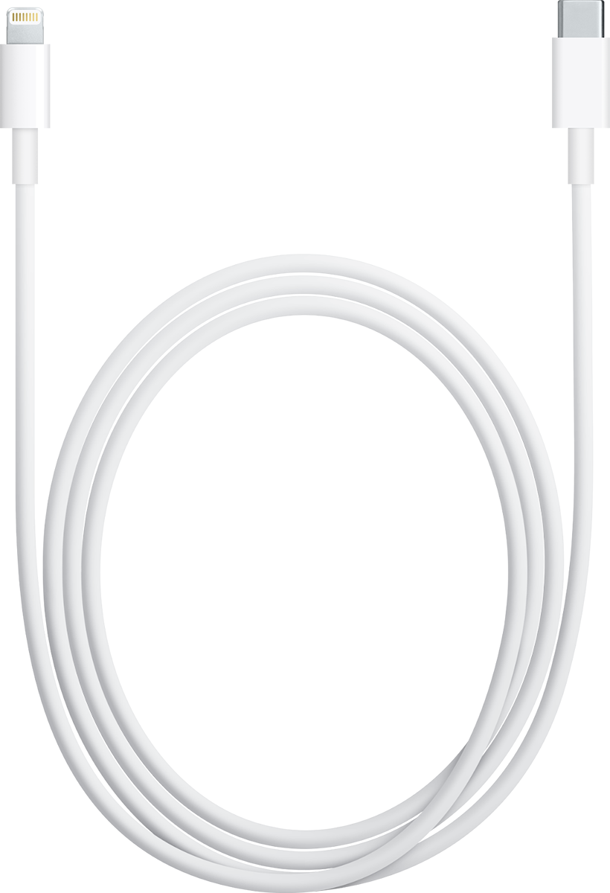
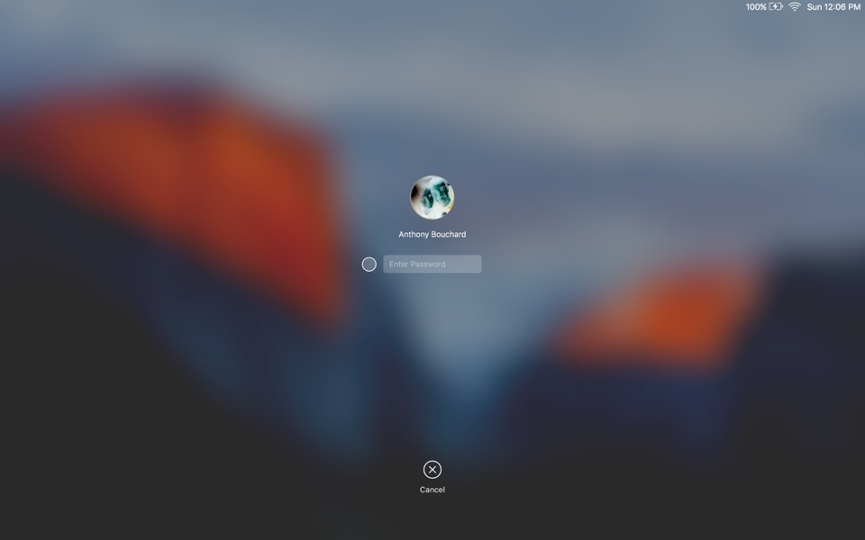
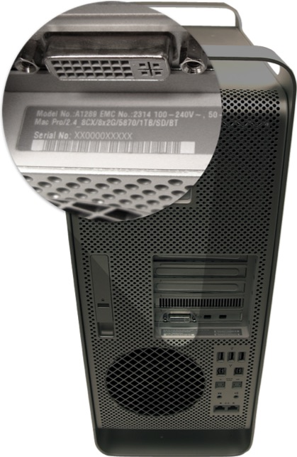

Conecta el cable de corriente e intente encender la computadora. ¿Su computadora enciende?.
¿Hay luz eléctrica en el sitio donde esta la computadora?
¿La computadora muestra algo en pantalla?
¿El cable de video está conectado?

Conecta el cable de vídeo y reinicia la Computadora
Conecte un monitor distinto e intente nuevamente
¿La computadora muestra el escitorio?

Llame a un centro Apple cerca de usted. Recuerda tener el numero de serie de tu equipo a mano
Punto Mac: (809) 412-0806
iZone: (809) 683-2563
Anota el numero de serie de tu equipo
Desenchufa todos los cables y conectores de tu iMac. Luego, voltéala.El número de serie y el número ID de
Ethernet con códigos de barras están en una etiqueta situada en el
borde de la carcasa inferior de la computadora (abajo).
Anota el numero de serie de tu equipo

En la superficie de la computadora puedes encontrar el número de serie en la etiqueta de configuración
del modelo, ubicada en la parte
posterior de la computadora, justo debajo de los puertos de video.
Todo Bien
Debe enviar el equipo a una tienda autorizada por Apple para reparar su
computadora
Ve a otro sitio o espera a que vuelva la luz
¿La computadora muestra algo en pantalla?
Debe enviar el equipo a una tienda autorizada por Apple para reparar su
computadora. Eliga el modelo de computadora que posee